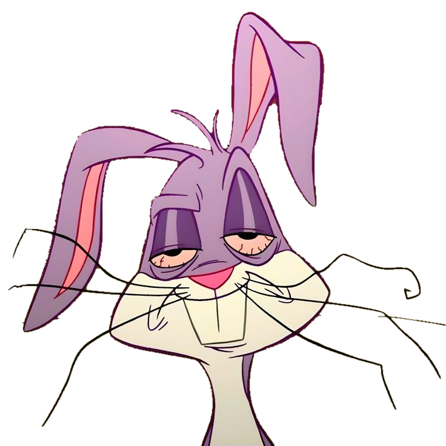
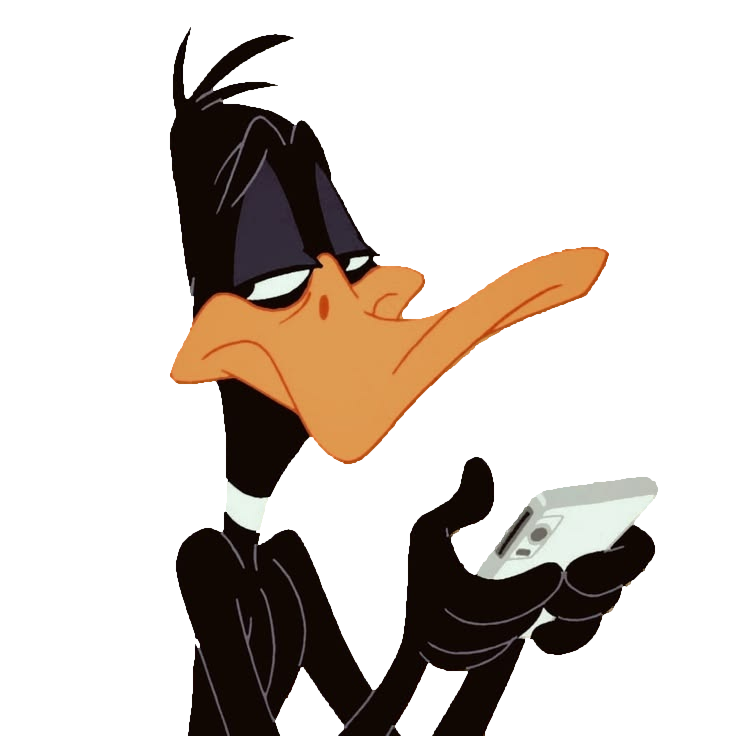

La energía:
La energía es la capacidad de los cuerpos o sistemas materiales para realizar un trabajo o producir cambios en ellos mismos, o en otros cuerpos. En física, se define como una magnitud escalar que cuantifica la capacidad de transformar la materia o generar movimiento, calor, luz, etc.
CaricArte
Las caricaturas son representaciones artísticas que exageran o distorsionan los rasgos físicos, faciales o comportamentales de una persona o grupo, con el fin de provocar risa, reflexión crítica o sátira.


Aprendiendo.
El aprendizaje es un proceso continuo y activo que se consolida mediante la experiencia, la curiosidad y la aplicación práctica del conocimiento. "Dime y lo olvido, enséñame y lo recuerdo, involúcrame y lo aprendo".
Confucio